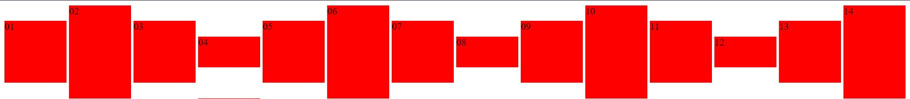

Omdat er op elke div een text-align:center; staat die de tekst centreert.
Omdat vertical-align:center; niet bestaat.
Hij zet alles op de middenste lijn van het element waarin het zit dus alle blokken worden op 1 horizontale lijn gezet door alles verticaal naar beneden te trekken.
Door je element waarin het zit een bepaalde height te geven en dan ook een line-height te geven met dezelfde waarde
Eerst display:table-cell; en dan een width en height geven voor dan erna een vertical-align:middle; te geven.
Omdat de class tall na de class area staat in html waardoor het ook word ingeladen nadat area is ingeladen en het dus overschrijft.